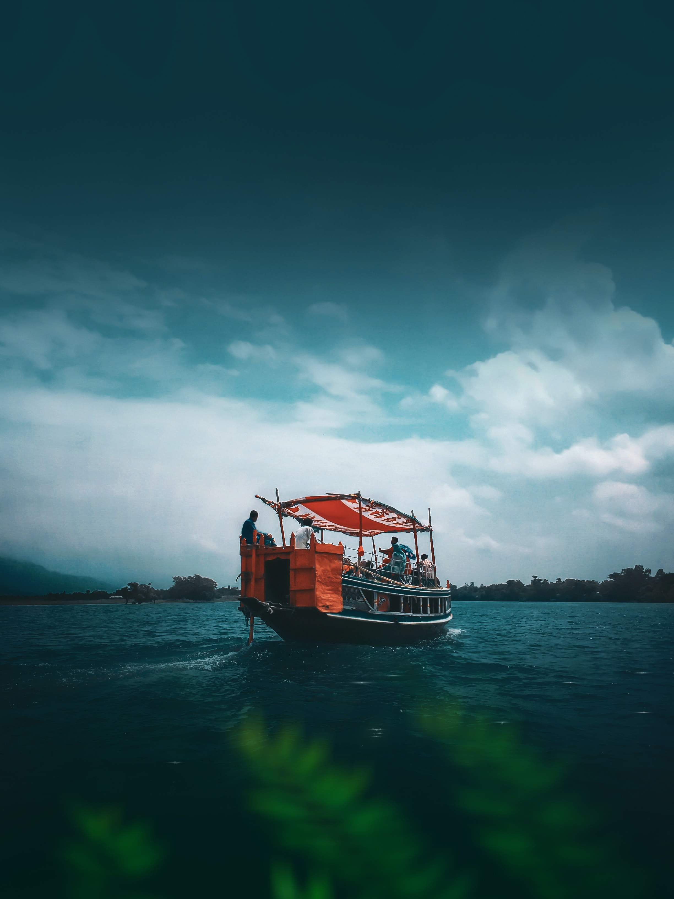
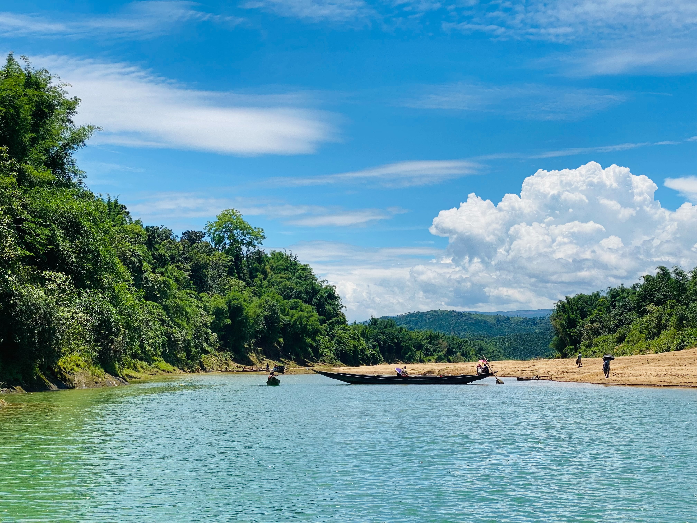
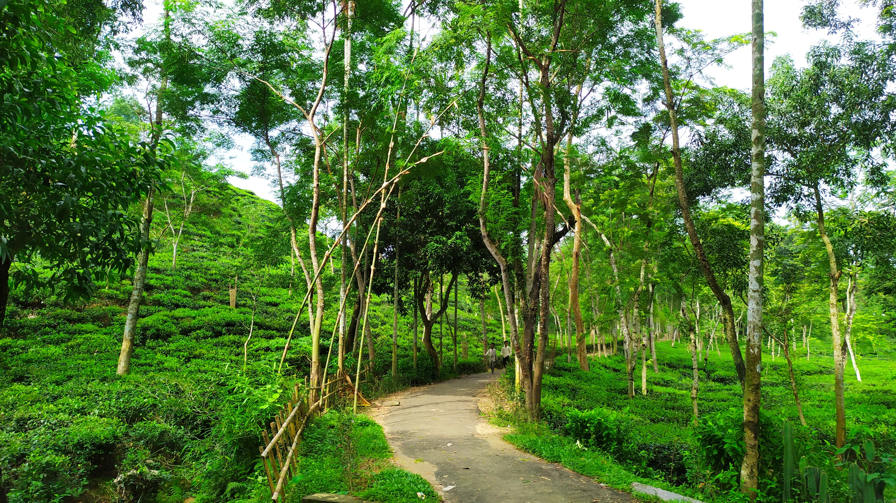
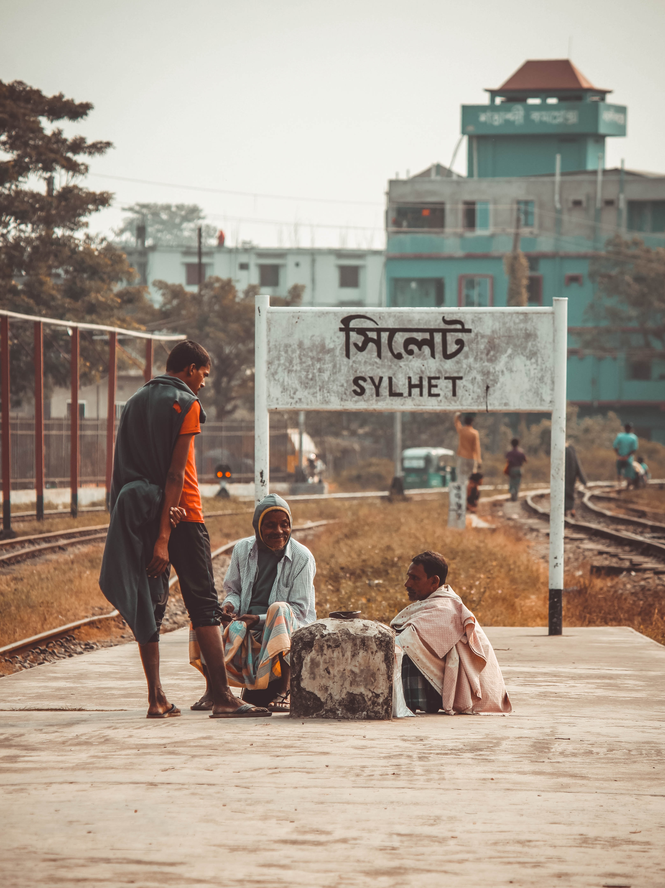
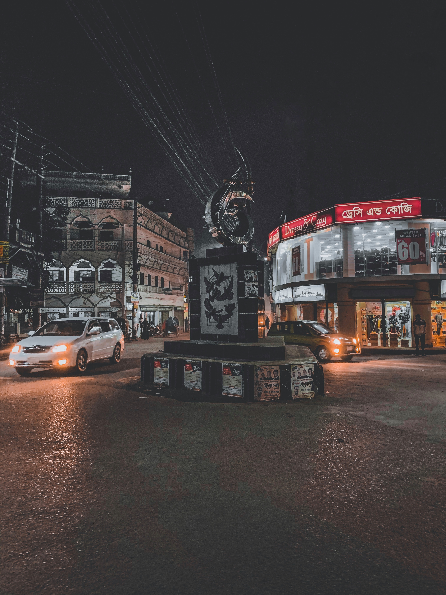

Nestled in the northeastern region of Bangladesh, Sylhet beckons travelers with its enchanting blend of natural wonders and cultural heritage. Lush tea gardens paint the landscape in vibrant hues, offering a serene escape amidst rolling hills and verdant valleys. The breathtaking beauty of places like Ratargul Swamp Forest and Lalakhal mesmerizes visitors with their pristine waterways and dense foliage. Sylhet is a haven for tea connoisseurs, boasting renowned tea estates like the century-old Malnichhara and the sprawling Surma Valley. The city's spiritual allure shines through at shrines like the revere, drawing pilgrims and history enthusiasts alike.
    Adventure seekers find solace in the Hazrat Shahjalal Mazar Sharif ;"hills of Jaflong, where the Piyain River carves its path through scenic vistas, while the vibrant markets and aromatic cuisine of Sylhet City immerse visitors in its vibrant culture. Exploring the Seven Layered Fountain, traversing the exotic Lawachara National Park, or simply indulging in a cup of freshly brewed local tea, Sylhet captivates hearts with its tranquility, charm, and rich tapestry of experiences.